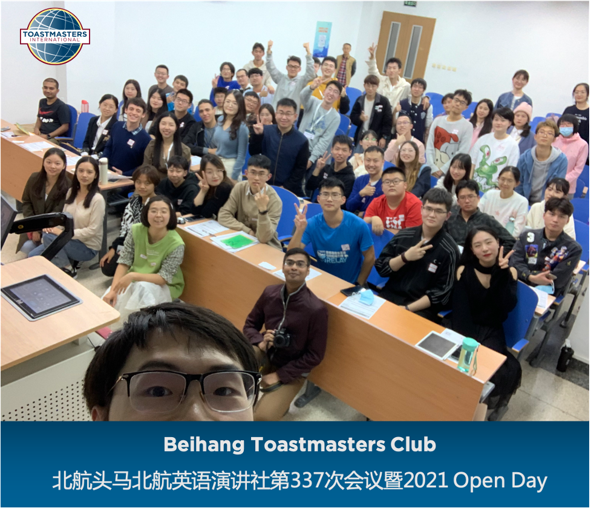

北航头马英语演讲俱乐部从2013年成立以来，在上周五成功举办了俱乐部第337次会议(Relationships)暨2021 Open Day会议。
为了保证本次会议能够顺利举行，俱乐部现任官员们提前一个月就开始了精心的准备。
会议举办的相当成功，超过60位小伙伴集聚一堂，会议的形式丰富多彩，我们打破了以往的常规会议形式，安排了精彩的角色扮演，游戏互动，答谢仪式以及抽奖环节。当晚给大家展示了北航头马英语演讲俱乐部别样的风采。
现场盛况究竟如何？
下面一起来看看吧！

Opening 开场环节
Table Topic Session 即兴演讲环节
Prepared Speach Session
最后一个环节啦～要看完哦～
Evaluation Session 点评环节